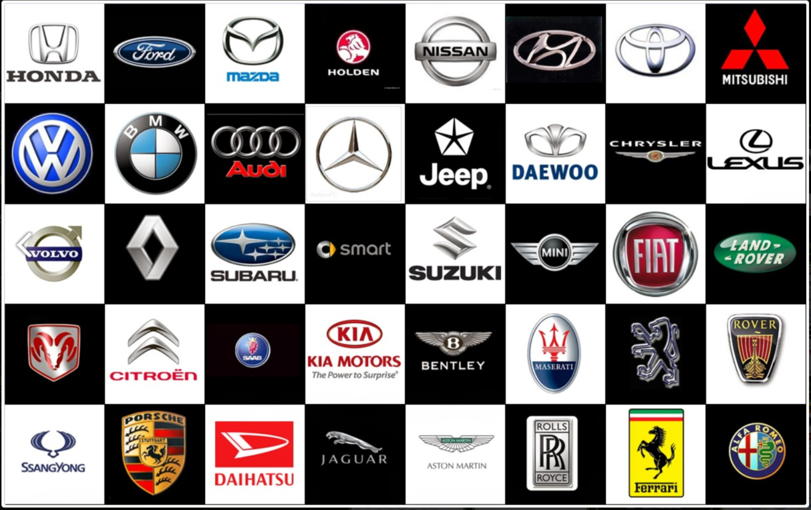

Work
At Ballito Auto Fix, we are committed to providing top-quality automotive services to ensure your vehicle performs at its best. Our experienced team offers a comprehensive range of services, including:
C.O.R & C.O.F
- Certificate of Roadworthiness (C.O.R): Ensure your vehicle meets all safety and regulatory standards with our thorough roadworthiness inspections and certification.
- Certificate of Fitness (C.O.F): Obtain your vehicle's fitness certificate with our detailed inspections, ensuring compliance with all necessary regulations.
Engine, Gearbox, and Differential
- Engine Repairs and Maintenance: From minor repairs to complete engine overhauls, our expert mechanics will keep your engine running smoothly and efficiently.
- Gearbox Services: Whether you need a gearbox repair or a complete rebuild, our skilled technicians have you covered.
- Differential Services: We provide differential repairs and maintenance to ensure smooth and reliable performance of your vehicle's drivetrain.
C.V. Joints
- C.V. Joint Repairs and Replacement: Keep your vehicle's drive axles in optimal condition with our comprehensive C.V. joint services, including inspection, repair, and replacement.
Major and Minor Services
- Major Services: Our major service package includes a thorough inspection and servicing of your vehicle, covering all essential components to keep it in peak condition.
- Minor Services: For regular maintenance, our minor service package includes oil changes, filter replacements, and a general check-up to ensure your vehicle remains reliable and safe on the road.
Diagnostic Services
- Advanced Diagnostics: Using state-of-the-art diagnostic tools, our technicians can accurately identify and resolve any issues with your vehicle. From engine diagnostics to electrical system checks, we've got you covered.